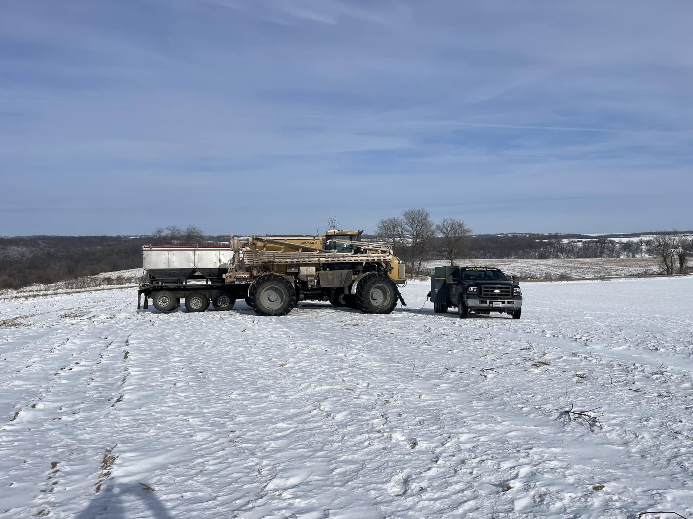
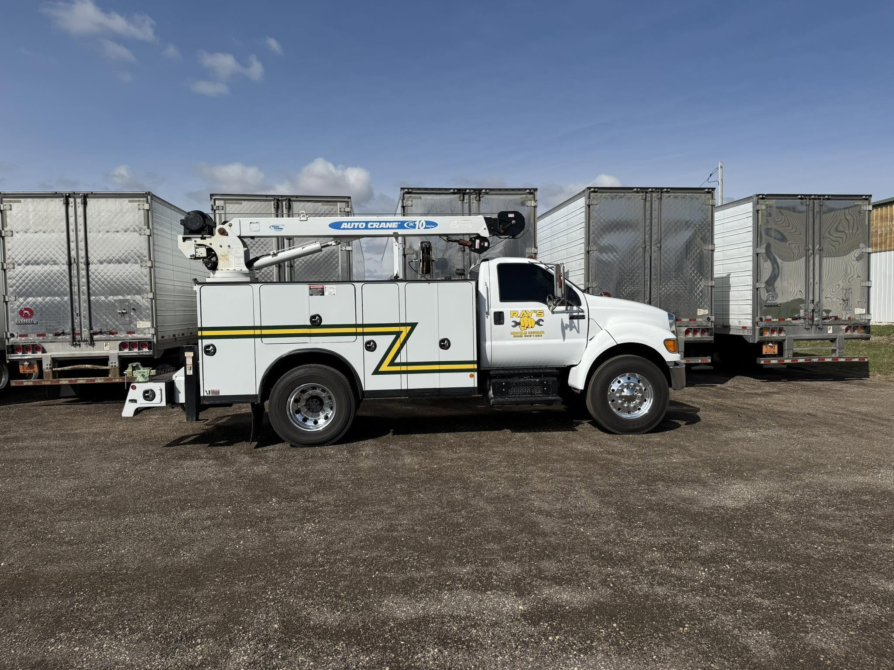

Emergency Repairs
Roadside and on-site repair for trucks, trailers, equipment, and fleet vehicles.
Monroe, Wisconsin Mobile Repair
Emergency roadside and on-site repair for trucks, trailers, equipment, and fleet vehicles across Green County and surrounding areas.
What Ray's Handles
Roadside and on-site repair for trucks, trailers, equipment, and fleet vehicles.
Help keep your fleet compliant, road-ready, and prepared for inspection requirements.
On-site repair and maintenance to reduce downtime and avoid unnecessary trips to the shop.
Accessory installation for work trucks, trailers, and equipment setups.
Repair support for trailer brakes, lights, suspension, electrical issues, and more.
Why Choose Ray's
Ray's Mobile Repair is a local Monroe, Wisconsin business focused on getting the job done right where the work happens. Whether you're at the shop, in the yard, on the farm, or stuck roadside, Ray's brings mobile repair service to you.

Fleet & Commercial Support
Ray's Mobile Repair helps local businesses, farms, contractors, and fleet operators reduce downtime with on-site repair and maintenance. From routine maintenance to unexpected repairs, mobile service helps keep your trucks, trailers, and equipment working.
Talk About Fleet Service
Based in Monroe
Proudly serving Monroe, Green County, and surrounding Southern Wisconsin communities. Call to confirm availability for your location.
Request Mobile Repair ServiceOwner Operated
Raymond Johnson founded Ray's Mobile Repair to provide honest, dependable mobile repair service for trucks, trailers, equipment, and commercial vehicles. When your truck goes down, Ray's goal is simple: get to the job, solve the problem, and help you get back to work.
Learn More About RayNeed Help?
For non-urgent requests, send a message and Ray's will get back to you as soon as possible. For urgent roadside service, call directly.